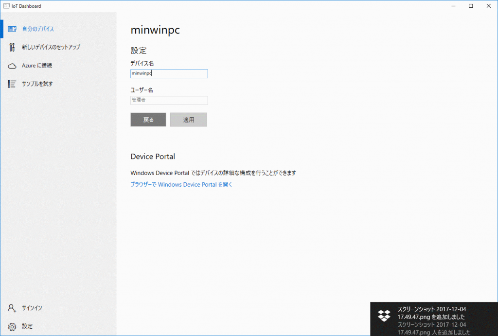

Introduction
新しいプロジェクト、と言いますかPoCのために、検証を休みの日とかに考えています。
その一環でRaspberry Pi3を使おうと思い、どうせならWindowsでやってみるか、ということで最新のWindows 10 IoT Coreを試してみることに。
Instructions
Download Windows 10 IoT Core Dashboard
まずは、Windows 10 IoT Core Dashboardをダウンロードします。
これは、Windows 10にインストールする、IoTデバイスのダッシュボードアプリケーションです。
DashboardからOSのインストール、各種設定の変更が可能です。
Windows 10 IoT Core Dashboardからダウンロードします。
{kind=link}
Install Windows 10 IoT Core Dashboard
次はインストールです。ダウンロードしたSetup.exeをダブルクリックするだけです。
ClickOnceなのか、インストールはすぐ終わります。
{kind=link}
{kind=link}
Launch Dashboard
インストールが完了するとDashboardが立ち上がりますが、スタートメニューから起動も出来ます。
{kind=link}
{kind=link}
Dashboardが立ち上がるとファイアウォールの許可を求めるダイアログが出るので、適当に許可を与えます。
許可しないと、OSイメージのダウンロードが出来ないと思われますので、必須でしょう。
{kind=link}
Setup New Device
いよいよOSのインストールです。
インストールは、画面左の新しいデバイスのセットアップから実行します。
デバイスの種類はRasoberry Pi 2 & 3、OS ビルドは、Windows !0 IoT Core (16299)**を選択します。
ドライブは、SDカードが挿入されたドライブを選択します。
**デバイス名は後から変更できますので、気にしなくても良いです。
管理者パスワードは、今後必要になるので忘れないでください。
ソフトウェア ライセンス条項に同意するをチェックし、ダウンロードとインストールをクリックしてOSイメージの作成を開始します。
{kind=link}
暫くすると、コンソール画面が表示されますが、もう暫く待機します。
{kind=link}
セットアップが完了しましたので、SDカードを抜いて、お手持ちのIoTデバイスに差し込みます。
{kind=link}
IoTデバイスをLANに接続後、画面右側の自分のデバイスに移動します。

自分のデバイスが表示されます。

項目をダブルクリックすると遷移する先でデバイス名を変更できます。
{kind=link}
Go to Device Portal
Dashboardから出来るのは、OSのインストールとデバイス名の設定ぐらいで、各種詳細設定の変更、リモート接続などは、Device Portalから実行します。
デバイス一覧から、対象のデバイスを右クリックすると表示されるコンテキストメニューからDevice Poratl で開くを選択します。
次に認証ダイアログが表示されます。
先ほど入力した管理者パスワードを利用してログインします。なおユーザ名はAdministratorです。
{kind=link}
{kind=link}
{kind=link}
セットアップは以上です。
Raspbianのインストールに比べると非常に簡単です。
このあたりは流石Microsoftといったところでしょう。